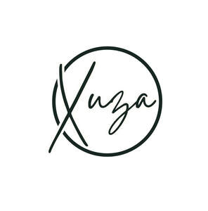

Trade Mark Journal No.2025/028 11 July 2025
UK00004229529 4 July 2025 (5,28)

- Class 5
- Dietary supplements; Dietary and nutritional supplements; Flaxseed dietary supplements; Lecithin dietary supplements; Protein dietary supplements; Dietary food supplements; Chlorella dietary supplements; Zinc dietary supplements; Nutraceuticals for use as a dietary supplement; Mineral dietary supplements; Casein dietary supplements; Glucose dietary supplements; Albumin dietary supplements; Enzyme dietary supplements; Alginate dietary supplements; Propolis dietary supplements; Linseed dietary supplements; Liquid dietary supplements; Nutritional supplements; Pollen dietary supplements; Wheat dietary supplements; Dietary supplements for pets; Yeast dietary supplements; Dietary supplements for infants; Dietary supplements for humans; Dietary supplements consisting of vitamins; Dietary supplements and dietetic preparations; Herbal dietary supplements for persons special dietary requirements; Dietary supplement drinks; Soy protein dietary supplements; Acai powder dietary supplements; Soy isoflavone dietary supplements; Protein powder dietary supplements; Mineral dietary supplements for animals; Mineral dietary supplements for humans; Flaxseed oil dietary supplements; Whey protein dietary supplements; Dietary supplements for medical use; Dietary supplements for controlling cholesterol; Folic acid dietary supplements; Dietary food supplements used for modified fasting; Dietary supplements with a cosmetic effect; Mineral nutritional supplements; Dietary supplements in powder form; Vitamin supplements; Brewer's yeast dietary supplements; Liquid nutritional supplements; Linseed oil dietary supplements; Dietary and nutritional preparations; Food supplements; Calcium supplements; Health food supplements for persons with special dietary requirements; Dietary supplements consisting primarily of calcium; Probiotic supplements; Dietary supplements consisting primarily of magnesium; Protein supplements; Dietary supplements and dietetic preparations containing CBD oil; Dietary supplement drink mixes; Anti-oxidant food supplements; Pine pollen dietary supplements; Wheat germ dietary supplements; Herbal supplements; Prebiotic supplements; Royal jelly dietary supplements; Activated charcoal dietary supplements; Dietary supplements promoting fitness and endurance; Ground flaxseed fiber for use as a dietary supplement; Vitamin and mineral food supplements; Nutritional supplements for veterinary use; Anti-oxidant supplements; Dietary supplemental drinks; Dietary supplements consisting primarily of iron; Homeopathic supplements; Natural dietary supplements for treating claustrophobia; Vitamin and mineral supplements; Vitamin supplements for animals; Vitamin preparations in the nature of food supplements; Dietary supplements for human beings; Vitamin and mineral supplements for pets; Food supplements for dietetic use; Liquid vitamin supplements; Health food supplements made principally of vitamins; Fiber (Dietary -); Dietary fiber; Nutritional supplements consisting primarily of calcium; Dietary supplements for pets in the nature of a powdered drink mix; Nutritional supplements consisting primarily of magnesium; Colostrum supplements; Fibre (Dietary -); Dietary supplements for humans not for medical purposes; Anti-oxidants for dietary use; Nutritional supplements for livestock feed; Calcium tablets as a food supplement; Nutritional supplement energy bars; Nutritional supplements consisting primarily of zinc; Medicated food supplements; Nutritional supplements consisting of fungal extracts; Bee pollen for use as a dietary food supplement; Dietary pet supplements in the form of pet treats; Protein supplements for animals; Health-aid foods supplements containing ginseng; Food supplements for sportsmen; Nutritional supplements consisting primarily of iron; Ganoderma lucidum spore powder dietary supplements; Liquid herbal supplements; Vitamin supplements for use in renal dialysis; Health food supplements made principally of minerals; Food supplements for medical purposes; Food supplements for veterinary use; Nutritional supplements made of starch adapted for medical use; Diet capsules; Powdered fruit-flavored dietary supplement drink mix; Antibiotic food supplements for animals; Dietary fiber to aid digestion; Food supplements for non-medical purposes; Dietary supplements for human beings and animals; Nutritional supplement meal replacement bars for boosting energy; Vitamin supplement patches; Powdered nutritional supplement drink mix; Food supplements consisting of amino acids; Mineral supplements for feeding livestock; Medicated supplements for animal feedstuffs; Food supplements in liquid form; Powdered nutritional supplement energy drink mix; Protein supplement shakes; Dietetic and nutritional preparations; Vitamins and vitamin preparations; Medicated supplements for foodstuffs for animals; Fitness and endurance supplements; Zinc supplement lozenges; Multivitamins; L-carnitine for weight loss; Blood protein fractions; Magnesium sulphate for pharmaceutical use; Muscle relaxants; Protein synthesis inhibitors; Dietary supplements for animals; Antioxidant pills; Steroids; Magnesium salts for pharmaceutical use; Medicated muscle soaks; Skeletal muscle relaxants; Ophthalmic muscle relaxants; Testosterone preparations.
- Class 28
- Sport hoops; Sport balls; Sports games; Sports equipment; Gloves for sports; Balls for sports; Sports balls; Tennis uprights [sports equipment]; Nets for sports; Javelins [for field sports]; Protectors for elbows for use when participating in the sport of cricket; Harnesses for use in sports; Chest protectors adapted for playing the sport of taekwondo; Supporters (Men's athletic -) [sports articles]; Men's athletic supporters [sports articles]; Balls for playing sports; Sports bows [archery]; Apparatus for use in training for the game of rugby [sporting equipment]; Rings for sports; Balls for racket sports; Gymnastic and sporting articles; Leg guards adapted for playing sport; Discuses for sports; Sports training apparatus; Golf flags [sports articles]; Pads for use in sports.
Xuza Limited
XUZA LTD